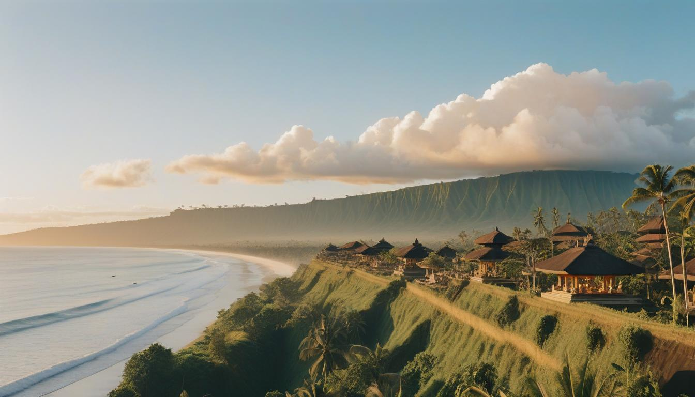

Bali, juga dikenal sebagai Pulau Dewata, adalah salah satu destinasi wisata paling populer di Indonesia. Pulau ini terkenal dengan pantai-pantainya yang indah, budaya yang kaya, dan pemandangan alam yang menakjubkan.
Bali

Aktivitas di Bali
- Berselancar di Pantai Kuta
- Mengunjungi Pura Tanah Lot
- Menikmati keindahan sawah terasering di Ubud
- Snorkeling dan menyelam di Pulau Menjangan
- Menjelajahi kehidupan malam di Seminyak
Informasi Penting
Waktu terbaik untuk mengunjungi Bali adalah antara April dan Oktober, saat musim kemarau. Pastikan untuk memesan akomodasi dan transportasi jauh-jauh hari, terutama selama musim liburan.